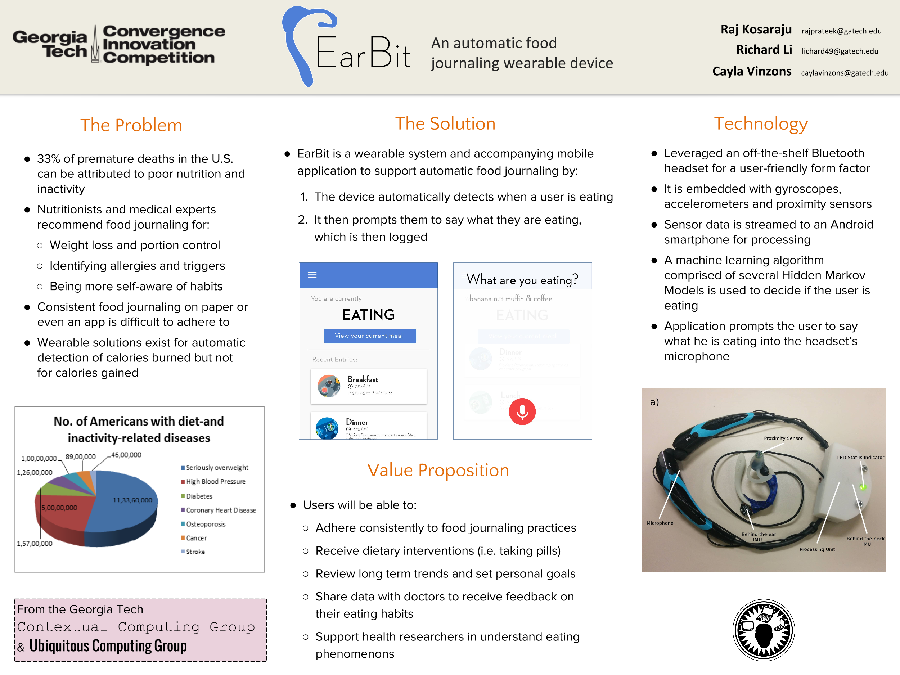

What is EarBit?
EarBit is a wearable system to support automatic food journaling. EarBit can automatically detect when a user is eating, and prompts them to vocally indicate what they are eating through the headset’s microphone.
Significance
The current state of the art method for food journaling is through manually self-reporting eating activities, and studies have shown that adherence to such plans is very poor, with as many as 90% of subjects dropping out within a week. Although the prevalence of smartphones has helped this cause, it is still difficult for users to maintain a consistent track record.
A Short Video
Overview
About
EarBit is a project from the Ubiquitos Computing Group and Contextual Computing Group at Georgia Tech. It's still being actively researched upon and we plan to submit our innovation and findings to the UbiComp 2017 conference.